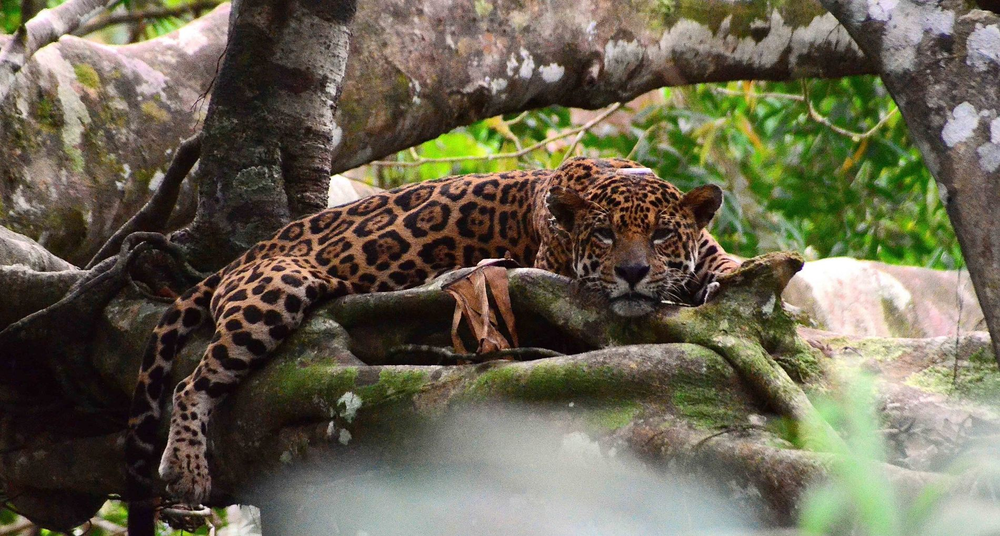

Onça-Pintada
O maior felino das Américas, um predador crucial para o equilíbrio do ecossistema amazônico.
O maior felino das Américas, um predador crucial para o equilíbrio do ecossistema amazônico.
Com sua plumagem vibrante, é uma das aves mais emblemáticas, importante na dispersão de sementes.
O maior golfinho de água doce do mundo, uma espécie cercada de lendas e mitos locais.
Planta aquática icônica, com folhas circulares enormes que podem suportar peso significativo.
Famoso por seu enorme bico laranja, o tucano é essencial para a dispersão de sementes de árvores frutíferas.
Conhecido por seus movimentos lentos, passa a maior parte da sua vida nas copas das árvores.